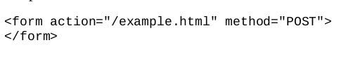
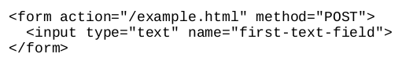

Los formularios en HTML son como en Windows una de las forma de capturar datos, estos datos pueden ser para aplicaciones como buscar un trabajo, una cuenta bancaria.

En el ejemplo de arriba se muestra la estructura basica de
un form donde el atributo "action" indica a
donde sera enviada la información recolecatdad del formulario.
El elemento forma también puede contener elemento hijos
estos pueden ser cabeceras (h1, h2, ..., etc) o incluso parrafos,
pero tambien puede contener elementos de tipo <input>
estos elementos son los que nos permiten capturar la información deseada.
Como ya se mencionó el elemento <input> es el que nos permite generar campos para posteriormente ser llenados por el usuario, unos de los mas comunes son los de texto.
En el ejemplo de arriba se observa como se emplea el elemento <input> el cual tiene un atributo type, este atributo indica que tipo de input se va a usar, en este caso es un elemento de texto.
En el ejemplo anterior vimos como es que podemos crear una entrada de texto pero no tenemos ningun elemento que explique para que es la entrada de texto. Para esto se usa el elemento <label>, este elemento debe esatar asociado a uno o mas elementos de entrada.

en el ejemplo de arriba se observa como el atributo for es usado para relacionar la etiqueta con la entrada de texto gracias a que for hace referencia al identificador de la entrada de texto.
Para ingresar contraseñas existe otro tipo de <input> la cual es basicamente igual a la entrada de texto solo que esta tiene la particularidad de ocultar el texto que se esta ingresando en la caja.
El ejemplo de arriba nos despliega lo siguiente:
¿Que tal si queremos que nuestro <input> solo
reciba numeros?
Afortunadamente los formularios de html tambien nos facilitan esa herramienta, la cual
solo permite al usuario ingresar numeros.
Para esto nuestro atributo type
debe ser igual a "number".

En el ejemplo de arriba se muestra como se emplea el elemento input con numeros, este elemento contiene un par de botones con los cuales se le permite al usuario incrementar o decrementar el valor que ha de ingresar, el atributo step es el que permite establecer cuanto se aumenta el valor cuando se preciona los botones antes mencionados.
Existe la posibilidad de que un usuario tenga que elejir varias opciones para estos casos tenemos la posibilidad de usar checkbox estos solo tienen dos estados, seleccionado o no seleccionado.
El codigo de arriba genera los checkbox de abajo.
en el caso de el atributo value este es valor que sera enviado en caso de que el checkbox al que coorresponde sea seleccionado.
En el caso que el usuario solo tenga que seleccionar una opción entre varias es mejor usar los elementos Radio que son bastante parecidos a los checkbox pero en este caso solo puede existir una opcion seleccionada, no mas.

En la imagen de arriba se observa como es que se emplea el elemento Radio y abajo se muestra como es que se despligan estos elementos en la pagina web
Los checkbox son una gran herramienta, pero no es util si nuestra lista de opciones crece mucho es decir cuando el usuario tiene que elegir entre una gran cantidad de opciones, para este tipo de casos existe el elemento Dropdown list el cual permite desplegar todas las opciones en una lista.
En este caso Dropdown list es bastante similar al elemento Number en cuanto a la forma de seleccionar se refiere.
Aun cuando Dropdown list es muy util tambien es bastante tedioso para un usuario dar clicks hasta encontrar la opción deseada, es por ello que para estos casos es mas util el elemento Data list este despliega la lista completa de opciones para que sea mas sencillo para el usuario elejir la deseada.
En las imagenes de arriba se observa como es que se usa en html y cual es el resultado en la pagina web.
Los formularios tambien nos permiten darle la oportunidad al usuario que pueda escribir texto con el elemento Textarea, este elemento puede ser usado cuando se desea recibir opiniones mas completas por parte del usuario.